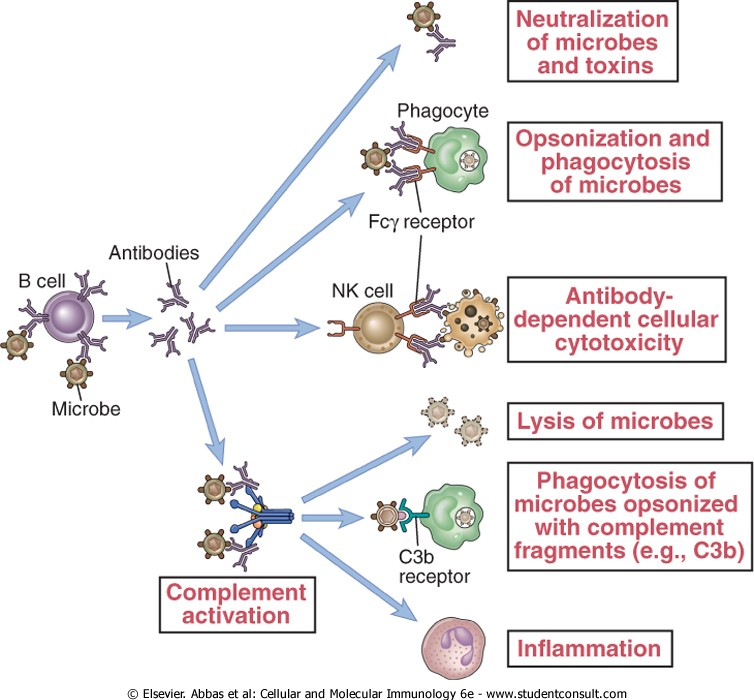
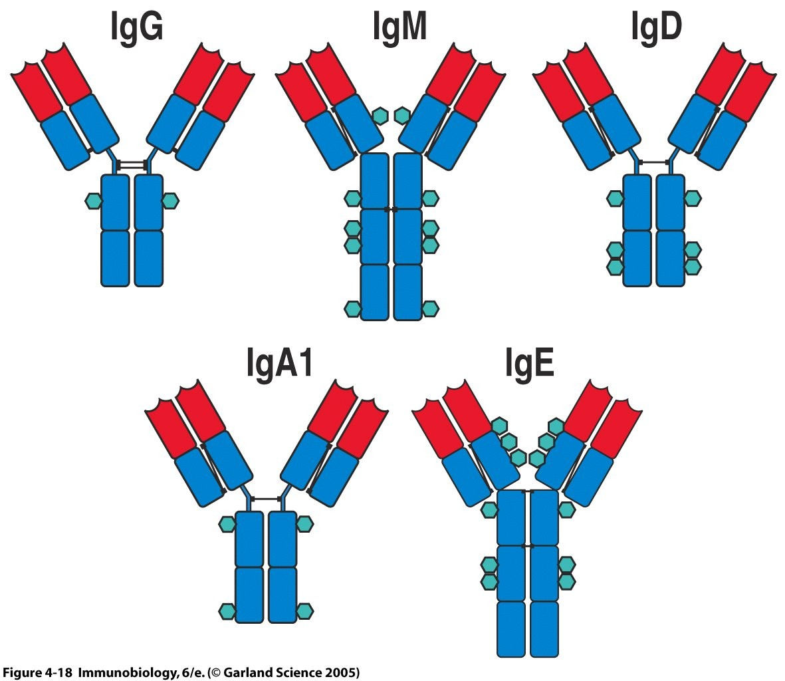
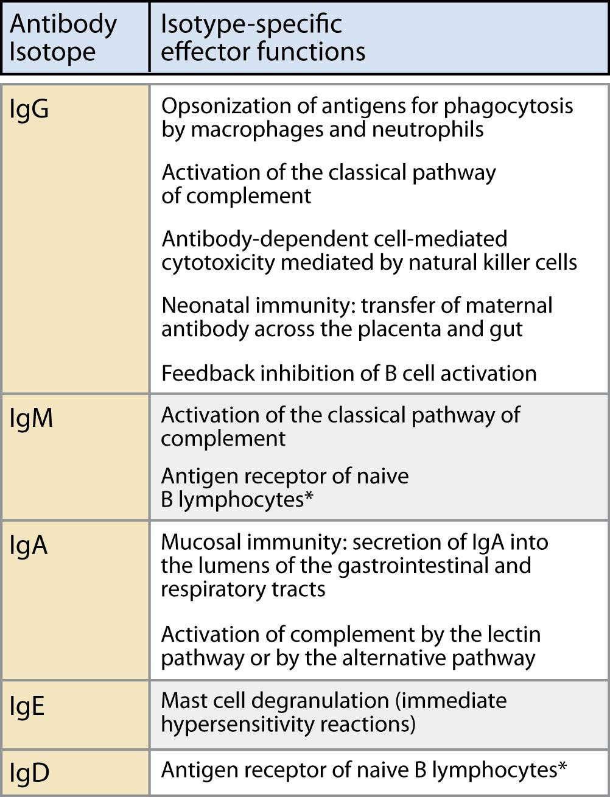

The Five Classes and What They Doپنج کلاس و کار هر یک
All five classes have the same V-end and therefore the same capacity to recognise. Everything that distinguishes them is at the C-end — which means every class difference is a difference in what the antibody does after it has bound, never in what it can bind.هر پنج کلاس سرِ متغیر یکسانی دارند و بنابراین توان شناسایی یکسان. هر چه آنها را متمایز میکند در سرِ ثابت است — یعنی هر تفاوت کلاسی، تفاوتی است در آنچه آنتیبادی پس از اتصال انجام میدهد، نه در آنچه میتواند ببندد.
By the end of this Part you should be able toدر پایان این بخش باید بتوانید
Name the five functions of an antibody and say which end performs each.پنج عملکرد آنتیبادی را نام ببرید و بگویید هر یک را کدام سر انجام میدهد.
Give the defining property of each of the five classes.ویژگی تعریفکنندهٔ هر یک از پنج کلاس را بگویید.
Say which classes fix complement, and in which order of strength.بگویید کدام کلاسها کمپلمان را تثبیت میکنند و به چه ترتیبی از قدرت.
Explain why IgM dominates a primary response and IgG a secondary one.توضیح دهید چرا IgM در پاسخ اولیه و IgG در ثانویه غالب است.
3.1The Five Functions of an Antibodyپنج عملکرد آنتیبادی

Fig 3.1 Everything an antibody can do, on one diagram. Read it as a fork: the V-end binds the microbe or toxin, and then the Fc decides what happens next — depending on which cell or molecule picks the Fc up.هر آنچه آنتیبادی میتواند بکند، روی یک نمودار. آن را بهصورت یک دوراهی بخوانید: سرِ متغیر به میکروب یا سم میچسبد و سپس Fc تعیین میکند چه رخ دهد — بسته به اینکه کدام سلول یا مولکول Fc را بردارد.
Table 3.1 The five functions, and which end does the workجدول ۳.۱ — پنج عملکرد و اینکه کدام سر کار را میکند
Functionعملکرد
Endسر
How it worksچگونه کار میکند
Neutralisationخنثیسازی
V-end
Binding alone blocks the toxin’s active site or the virus’s attachment protein. The only function that needs no Fc at all — which is why an Fab fragment can still neutraliseصرف اتصال، جایگاه فعال سم یا پروتئین اتصالی ویروس را مسدود میکند. تنها عملکردی که اصلاً به Fc نیاز ندارد — و به همین دلیل قطعهٔ Fab هم میتواند خنثی کند
Opsonisationاپسونیزاسیون
C-end
The Fc sticks out from the coated microbe and is grabbed by Fcγ receptors on phagocytes, giving them a handle they otherwise lackFc از میکروبِ پوشیده بیرون میزند و گیرندههای Fcγ فاگوسیت آن را میگیرند و دستگیرهای مییابند که پیشتر نداشتند
Complement activationفعالسازی کمپلمان
C-end
C1q binds CH2 of IgG or CH3 of IgM — but only once the antibody has bound antigen. See §5.3C1q به CH2 ایمونوگلوبولین G یا CH3 ایمونوگلوبولین M میچسبد — اما فقط پس از آنکه آنتیبادی آنتیژن را بسته باشد. ← بخش ۵.۳
ADCC — antibody-dependent cell-mediated cytotoxicityسمیت سلولی وابسته به آنتیبادی
C-end
An NK cell binds the Fc of antibody already coating a target cell through CD16 (FcγRIII) and kills it. Recognition is done by the antibody; killing by the NK cellیک سلول کشندهٔ طبیعی از راه CD16 به Fc آنتیبادیای که سلول هدف را پوشانده میچسبد و آن را میکشد. شناسایی با آنتیبادی است؛ کشتن با سلول NK
Transport — placenta and mucosaانتقال — جفت و مخاط
C-end
FcRn carries IgG across the placenta; the poly-Ig receptor carries IgA across epithelium. Both are Fc-receptor jobs, which is why only certain classes are transportedFcRn ایمونوگلوبولین G را از جفت میگذراند؛ گیرندهٔ پلیایمونوگلوبولین ایمونوگلوبولین A را از اپیتلیوم. هر دو کار گیرندهٔ Fcاند، و به همین دلیل فقط کلاسهای خاصی منتقل میشوند
High-Yield — the antibody does not kill anythingنکتهٔ کلیدی — آنتیبادی هیچچیز را نمیکشد
With the single exception of neutralisation, an antibody has no intrinsic effector activity. It kills nothing, digests nothing and lyses nothing. What it does is mark a target and recruit something that can — complement, a phagocyte, an NK cell. This is why every effector function is an Fc function, and why the class of antibody made determines the kind of defence mounted. Choosing an isotype is choosing a weapon.جز خنثیسازی، آنتیبادی هیچ فعالیت اجرایی ذاتی ندارد. چیزی نمیکشد، چیزی هضم نمیکند و چیزی را لیز نمیکند. کاری که میکند علامتگذاری هدف و فراخواندن چیزی است که بتواند — کمپلمان، فاگوسیت، سلول NK. به همین دلیل هر عملکرد اجرایی، عملکرد Fc است، و به همین دلیل کلاس آنتیبادی ساختهشده نوع دفاع را تعیین میکند. انتخاب ایزوتیپ، انتخاب سلاح است.
3.2IgG · IgM · IgA · IgE · IgDپنج کلاس

Fig 3.2 The five classes drawn to the same scale. Note the structural facts you can read straight off the picture: IgM is a pentamer, IgA1 can be a dimer, and IgM and IgE have four CH domains where the others have three plus a hinge.پنج کلاس با مقیاس یکسان. به واقعیتهای ساختاریای که مستقیم از تصویر میخوانید توجه کنید: IgM پنتامر است، IgA1 میتواند دیمر باشد، و IgM و IgE چهار دومین CH دارند آنجا که بقیه سه دومین بهعلاوهٔ یک لولا دارند.
Class 1 of 5IgG — the workhorseIgG — اسب کاری
What it isچیست
Monomer, γ heavy chain, four subclasses IgG1–IgG4. The most abundant immunoglobulin in serum (~75–80% of total Ig) and the longest-lived (half-life ≈ 21 days, far longer than the others).مونومر، زنجیرهٔ سنگین گاما، چهار زیرکلاس. فراوانترین ایمونوگلوبولین سرم (حدود ۷۵ تا ۸۰ درصد کل) و دیرپاترین (نیمهعمر حدود ۲۱ روز).
What binds itچه به آن میچسبد
C1q, at CH2 — IgG1, IgG2 and IgG3 fix complement; IgG4 does not.C1q، در CH2 — IgG1، IgG2 و IgG3 کمپلمان را تثبیت میکنند؛ IgG4 نه.
Fcγ receptors on phagocytes and NK cells.گیرندههای Fcγ روی فاگوسیتها و سلولهای NK.
FcRn on placental syncytiotrophoblast — and on endothelium, which is what gives IgG its long half-life by recycling it out of lysosomes.FcRn روی سینسیشیوتروفوبلاست جفت — و روی اندوتلیوم، که با بازیافت IgG از لیزوزوم، نیمهعمر طولانیاش را میدهد.
What it doesچه میکند
All five functions. The only class that crosses the placenta — which is the whole of neonatal humoral immunity for the first months of life.A newborn cannot make useful antibody for weeks. Maternal IgG transferred across the placenta in the third trimester covers that gap, and its 21-day half-life is exactly what makes the cover last. The physiological trough at about 3–6 months of age, as maternal IgG decays faster than the infant makes its own, is why that is the age at which congenital antibody deficiencies first declare themselves.هر پنج عملکرد. تنها کلاسی که از جفت میگذرد — و همین، تمام ایمنی هومورال نوزاد در ماههای نخست زندگی است.نوزاد تا هفتهها نمیتواند آنتیبادی مفید بسازد. IgG مادری که در سهماههٔ سوم از جفت منتقل شده این شکاف را میپوشاند و نیمهعمر ۲۱ روزهاش دقیقاً همان چیزی است که پوشش را دوام میبخشد. افت فیزیولوژیک حدود ۳ تا ۶ ماهگی — وقتی IgG مادری سریعتر از ساخت خود نوزاد تحلیل میرود — دلیل آن است که نقصهای مادرزادی آنتیبادی در همان سن خود را نشان میدهند.
Remember it asبه یادش بسپارید بهعنوان
The secondary-response antibody: most abundant, longest-lived, crosses the placenta, does everything.آنتیبادی پاسخ ثانویه: فراوانترین، دیرپاترین، عبورکننده از جفت، انجامدهندهٔ همهکار.
Class 2 of 5IgM — the first responderIgM — نخستین پاسخدهنده
What it isچیست
Pentamer in serum, joined by a J chain; a monomer when it sits on the B-cell surface as the BCR. μ heavy chain with four CH domains and no hinge. The largest immunoglobulin — the old name is macroglobulin.در سرم پنتامر، متصل با زنجیرهٔ J؛ روی سطح سلول B بهعنوان گیرنده، مونومر. زنجیرهٔ سنگین مو با چهار دومین CH و بدون لولا. بزرگترین ایمونوگلوبولین — نام قدیمیاش ماکروگلوبولین.
What binds itچه به آن میچسبد
C1q, at CH3. A single IgM molecule is enough to start the classical pathway — where IgG needs two side by side.C1q، در CH3. یک مولکول IgM کافی است تا مسیر کلاسیک را آغاز کند — جایی که IgG به دو مولکول کنار هم نیاز دارد.
What it doesچه میکند
The most powerful complement activator of all the classes, and the first antibody made in a primary response.Both facts come from the same structure. Being a pentamer, IgM presents five Fc regions already clustered together, and C1q needs to engage at least two adjacent Fc sites to be activated. IgG in solution is monomeric and its Fc regions are scattered, so two IgG molecules must happen to land close together on the same surface — a much less likely event. That is also why IgM is efficient at agglutination despite low affinity: ten binding sites give enormous avidity even when each individual site binds weakly, which is exactly what a naive response needs before affinity maturation has happened.قدرتمندترین فعالکنندهٔ کمپلمان در میان همهٔ کلاسها، و نخستین آنتیبادی ساختهشده در پاسخ اولیه.هر دو واقعیت از یک ساختار میآیند. IgM چون پنتامر است، پنج ناحیهٔ Fc از پیش خوشهشده عرضه میکند، و C1q برای فعالشدن باید دستکم دو جایگاه Fc مجاور را بگیرد. IgG در محلول مونومر است و نواحی Fcاش پراکنده، پس باید اتفاقاً دو مولکول IgG نزدیک هم روی یک سطح بنشینند — رویدادی بسیار کماحتمالتر. به همین دلیل نیز IgM با وجود میل ترکیبی پایین در آگلوتیناسیون کارآمد است: ده جایگاه اتصال، اشتیاق عظیمی میدهند حتی وقتی هر جایگاه ضعیف میبندد — و دقیقاً همین چیزی است که پاسخ خام پیش از بلوغ میل ترکیبی نیاز دارد.
Remember it asبه یادش بسپارید بهعنوان
The primary-response antibody: biggest, first, best at complement, ten binding sites, does not cross the placenta.آنتیبادی پاسخ اولیه: بزرگترین، نخستین، بهترین در کمپلمان، ده جایگاه اتصال، از جفت نمیگذرد.
Clinical Correlation — why IgM in cord blood means infectionارتباط بالینی — چرا IgM در خون بندناف یعنی عفونت
IgM does not cross the placenta — it is far too large, and there is no transport receptor for it. So any IgM found in a newborn’s blood must have been made by the newborn. Detecting IgM against a specific organism in cord blood is therefore diagnostic of intrauterine infection, and it is the basis of testing for congenital toxoplasmosis, rubella, CMV and syphilis. Maternal IgG in the same sample proves nothing, because it crossed the placenta and simply reflects the mother’s history.IgM از جفت نمیگذرد — بسیار بزرگ است و گیرندهٔ انتقالی برایش وجود ندارد. پس هر IgMای که در خون نوزاد یافت شود حتماً خودِ نوزاد ساخته است. بنابراین یافتن IgM علیه ارگانیسمی خاص در خون بندناف، تشخیصی برای عفونت داخلرحمی است و مبنای آزمایش توکسوپلاسموز، سرخجه، سایتومگالوویروس و سیفلیس مادرزادی. IgG مادری در همان نمونه چیزی را ثابت نمیکند، چون از جفت گذشته و صرفاً سابقهٔ مادر را بازتاب میدهد.
Class 3 of 5IgA — the mucosal guardIgA — نگهبان مخاطی
What it isچیست
Monomer in serum; dimer in secretions, joined by a J chain and wrapped in the secretory piece. Subclasses IgA1 and IgA2. Made in enormous quantity — more IgA is synthesised per day than all other classes combined, but most of it leaves the body immediately.در سرم مونومر؛ در ترشحات دیمر، متصل با زنجیرهٔ J و پیچیده در قطعهٔ ترشحی. زیرکلاسهای IgA1 و IgA2. به مقدار عظیم ساخته میشود — روزانه بیش از مجموع همهٔ کلاسهای دیگر، اما بیشترش بیدرنگ بدن را ترک میکند.
Where it isکجاست
Mucosal secretions — saliva, tears, sweat, respiratory and gastrointestinal secretions — and in colostrum and breast milk.ترشحات مخاطی — بزاق، اشک، عرق، ترشحات تنفسی و گوارشی — و در آغوز و شیر مادر.
What it doesچه میکند
Mucosal immunity: it blocks pathogens at the epithelial surface before they ever enter tissue. The lecture notes that IgA activates complement via the alternative pathway — not the classical one.This is the right weapon for the job. A mucosal surface is not a place to start an inflammatory cascade: inflame the gut wall and you damage the barrier you were defending. So IgA is built to neutralise and exclude rather than to inflame — it does not fix complement classically, and it is a poor opsonin. Breast milk works on exactly this principle: the secretory IgA passed to the infant is not absorbed, it stays in the lumen and coats the gut.ایمنی مخاطی: پاتوژنها را در سطح اپیتلیال مسدود میکند، پیش از آنکه اصلاً وارد بافت شوند. درس اشاره میکند که IgAکمپلمان را از راه مسیر آلترناتیو فعال میکند — نه کلاسیک.این سلاح درستِ این کار است. سطح مخاطی جای آغازکردن آبشار التهابی نیست: دیوارهٔ روده را ملتهب کنید، سدی را که از آن دفاع میکردید تخریب کردهاید. پس IgA چنان ساخته شده که خنثی و طرد کند نه آنکه ملتهب سازد — کمپلمان را بهروش کلاسیک تثبیت نمیکند و اپسونین ضعیفی است. شیر مادر دقیقاً بر همین اصل کار میکند: IgA ترشحیِ منتقلشده به نوزاد جذب نمیشود، در مجرا میماند و روده را میپوشاند.
Remember it asبه یادش بسپارید بهعنوان
The secretions antibody: dimer, J chain plus secretory piece, guards mucosa, alternative pathway only.آنتیبادی ترشحات: دیمر، زنجیرهٔ J بهعلاوهٔ قطعهٔ ترشحی، نگهبان مخاط، فقط مسیر آلترناتیو.
Absence proves function — selective IgA deficiencyنبودش کارش را ثابت میکند — کمبود انتخابی IgA
The commonest primary immunodeficiency, affecting roughly 1 in 600 people. Most are asymptomatic, because IgM can be transported into secretions and partly compensate. Those who are not asymptomatic get exactly what the function predicts: recurrent sinopulmonary and gastrointestinal infections — surface infections at the surfaces IgA guards. There is also a classic hazard: some patients make anti-IgA antibodies, and giving them blood products containing IgA can cause anaphylaxis. The disease is a readout of the function, and so is its treatment.شایعترین نقص ایمنی اولیه، تقریباً ۱ نفر از هر ۶۰۰. بیشترشان بدون علامتاند، چون IgM میتواند به ترشحات منتقل شود و تا حدی جبران کند. آنها که بدون علامت نیستند، دقیقاً همان چیزی را میگیرند که عملکرد پیشبینی میکند: عفونتهای مکرر سینوسی–ریوی و گوارشی — عفونت سطحی در همان سطوحی که IgA پاسداریشان میکند. یک خطر کلاسیک هم هست: برخی بیماران آنتیبادی ضد IgA میسازند و دادن فرآوردههای خونی حاوی IgA به آنها میتواند آنافیلاکسی بدهد. بیماری، قرائتی از عملکرد است، و درمانش نیز.
Class 4 of 5IgE — parasites and allergyIgE — انگل و آلرژی
What it isچیست
Monomer, ε heavy chain with four CH domains and no hinge. Present in serum at the lowest concentration of all five classes — thousands of times less than IgG.مونومر، زنجیرهٔ سنگین اپسیلون با چهار دومین CH و بدون لولا. در سرم با کمترین غلظت در میان هر پنج کلاس — هزاران بار کمتر از IgG.
What binds itچه به آن میچسبد
FcεRI on mast cells and basophils — with such high affinity that IgE is bound essentially permanently, sitting on the mast cell surface waiting.FcεRI روی ماستسل و بازوفیل — با میل ترکیبی چنان بالا که IgE عملاً دائمی متصل میماند و روی سطح ماستسل منتظر مینشیند.
What it doesچه میکند
Mast-cell degranulation — the immediate (type I) hypersensitivity reaction — and defence against parasites.The mechanism explains both. IgE is pre-loaded onto mast cells; when antigen arrives and cross-links two adjacent IgE molecules, the receptors cluster and the cell degranulates within seconds, releasing histamine and other mediators. Against a helminth too large to phagocytose, that sudden local release of vasoactive and smooth-muscle-contracting mediators — plus recruited eosinophils — is a genuinely useful expulsion mechanism. Against pollen it is an allergy. Same machinery, different trigger. This also explains the speed: the antibody was already in place, so no synthesis step stands between exposure and reaction.دانهزدایی ماستسل — واکنش ازدیاد حساسیت فوری (نوع ۱) — و دفاع در برابر انگلها.مکانیسم، هر دو را توضیح میدهد. IgE از پیش روی ماستسل بارگذاری شده؛ وقتی آنتیژن میرسد و دو مولکول مجاور IgE را به هم متصل میکند، گیرندهها خوشه میشوند و سلول ظرف چند ثانیه دانهزدایی میکند و هیستامین و واسطههای دیگر آزاد میشود. در برابر کرمی که برای فاگوسیتوز بیش از حد بزرگ است، آن آزادسازی موضعی و ناگهانی واسطههای وازواکتیو و منقبضکنندهٔ عضلهٔ صاف — بهعلاوهٔ ائوزینوفیلهای فراخوانده — سازوکار دفعی واقعاً مفیدی است. در برابر گردهٔ گل، همان میشود آلرژی. یک ماشین، دو محرک. این سرعت را هم توضیح میدهد: آنتیبادی از پیش سر جا بوده، پس هیچ مرحلهٔ ساختی میان مواجهه و واکنش فاصله نمیاندازد.
Remember it asبه یادش بسپارید بهعنوان
The allergy and worm antibody: rarest in serum, pre-bound to mast cells, cross-linking triggers degranulation.آنتیبادی آلرژی و کرم: نادرترین در سرم، از پیش متصل به ماستسل، اتصال عرضی دانهزدایی را میاندازد.
Class 5 of 5IgD — the naive B cell’s receptorIgD — گیرندهٔ سلول B خام
What it isچیست
Monomer, δ heavy chain. Present in serum in trace amounts, with no established serum function.مونومر، زنجیرهٔ سنگین دلتا. در سرم به مقدار ناچیز، بدون عملکرد سرمی اثباتشده.
Where it isکجاست
On the surface of the mature naive B cell, co-expressed with membrane IgM as the antigen receptor.روی سطح سلول B بالغ خام، همبیان با IgM غشایی بهعنوان گیرندهٔ آنتیژن.
What it doesچه میکند
Acts as a B-cell receptor. Its appearance on the surface marks the transition from immature to mature, naive B cell — a cell that is ready to respond but has not yet met antigen.This is the one class whose value is as a marker rather than a weapon. If a question asks what surface IgD indicates, the answer is the maturation state of the B cell, not an effector function.بهعنوان گیرندهٔ سلول B عمل میکند. پیدایشش روی سطح، گذار از سلول B نابالغ به بالغِ خام را نشان میدهد — سلولی آمادهٔ پاسخ که هنوز آنتیژن ندیده.این تنها کلاسی است که ارزشش بهعنوان نشانگر است نه سلاح. اگر سؤالی بپرسد IgD سطحی چه را نشان میدهد، پاسخ وضعیت بلوغ سلول B است، نه یک عملکرد اجرایی.
Remember it asبه یادش بسپارید بهعنوان
The marker antibody: surface of the mature naive B cell, no known effector function.آنتیبادی نشانگر: سطح سلول B بالغ خام، بدون عملکرد اجرایی شناختهشده.
3.3The Class Comparison Tableجدول مقایسهٔ کلاسها

Fig 3.3 The lecture’s own effector-function table. Note that every entry is a C-end property, which is the point of §3.1 made visible.جدول عملکردهای اجرایی خود درس. توجه کنید که هر مدخل، ویژگی سرِ ثابت است — و همین، نکتهٔ بخش ۳.۱ را قابلرؤیت میکند.
High-Yield — four one-liners that answer most class questionsنکتهٔ کلیدی — چهار جملهٔ کوتاه که بیشتر پرسشهای کلاسی را پاسخ میدهند
Most abundant in serum: IgG. Most abundant produced per day: IgA — but it leaves the body.فراوانترین در سرم: IgG. فراوانترین ساختهشده در روز: IgA — اما از بدن خارج میشود.
Crosses the placenta: IgG only. Found in secretions and breast milk: IgA.عبور از جفت: فقط IgG. در ترشحات و شیر مادر: IgA.
Best complement activator: IgM (one molecule suffices), then IgG3 > IgG1 > IgG2. IgG4, IgA, IgE and IgD do not fix complement classically.بهترین فعالکنندهٔ کمپلمان: IgM (یک مولکول کافی است)، سپس IgG3 > IgG1 > IgG2. IgG4، IgA، IgE و IgD کمپلمان را بهروش کلاسیک تثبیت نمیکنند.
First in a primary response: IgM. Dominant in a secondary response: IgG. A rising IgM titre means recent or current infection; a high IgG with no IgM means past exposure or vaccination.نخستین در پاسخ اولیه: IgM. غالب در پاسخ ثانویه: IgG. تیتر بالاروندهی IgM یعنی عفونت اخیر یا فعلی؛ IgG بالا بدون IgM یعنی مواجههٔ گذشته یا واکسیناسیون.